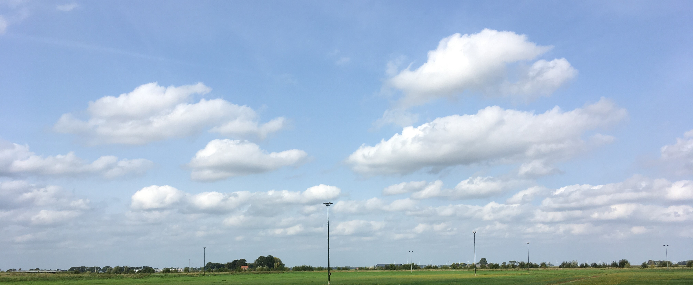
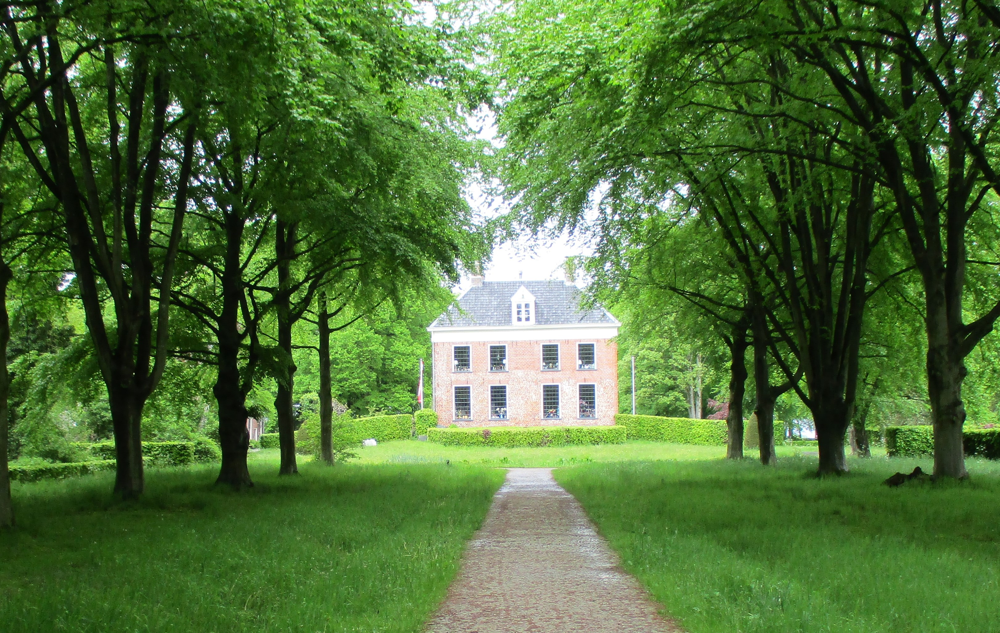

Midwolda
Kenmerken van het dorp
- Lint-dorp tussen Dollardpolder en Oldambtmeer
- Landgoed de Ennemaborg
- Zeilen in zomer en winter
- Midwolderbos
- Restaurants, camping, sauna en B&Bs
De ijsbaan
 De ijsbaan van Midwolda, is gelegen op 60 hectare grond van het Groninger Landschap en wordt in de winterperiode beheerd door Vereniging EigenKracht. Het is een van de grootste buiten ijsbanen van de provincie Groningen.
Landgoed Ennemaborg
 Landgoed Ennemaborg is al sinds de 14e eeuw een plek waar eerst een steenhuis stond en deze is later vervangen door een landhuis met torentjes. Tot het in de 19e eeuw weer werd omgebouwd tot een landhuis. In het gebied er om heen lag vroeger een dikke laag veen op een dikke laag keileem en potklei. Het is sinds 1965 in bezit en in beheer van het Groninger Landschap.